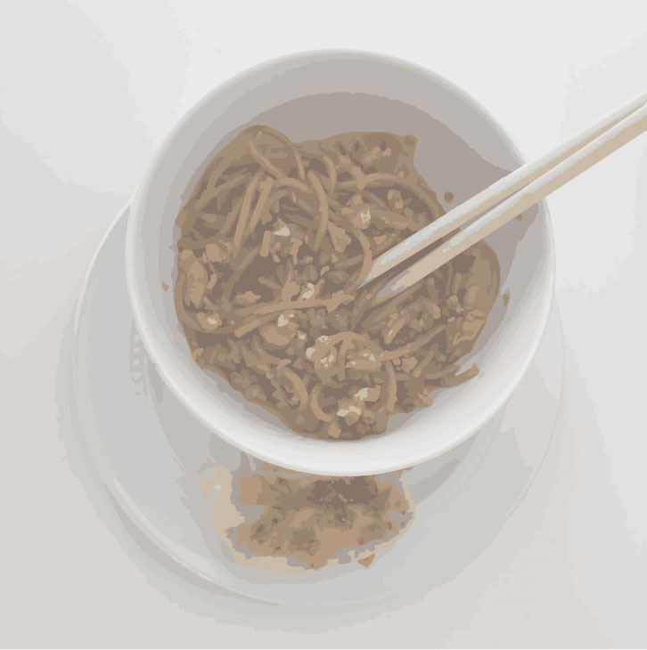

Asian Stir Fry Noodles with Shrimp Dumplings
9.5/10
This dish was delicious. I loved how balanced the entire meal was with a good number of proteins, carbohydrates, fats, and nutrients. As a whole, the flavors were just spot on, and it reminded me of the noodles my mother makes back home. The crunch of the fresh vegetables and the juiciness of the chicken paired with the sauce and soft noodles was a great meal. I would have liked it to be a little spicier and so I would recommend adding some chili oil to the noodles as well.

Tuesday, September 27, 2022